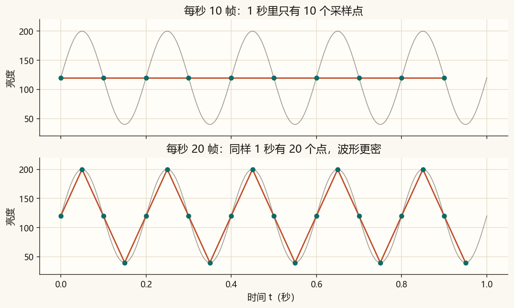
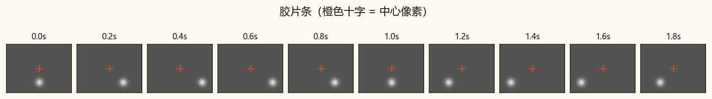
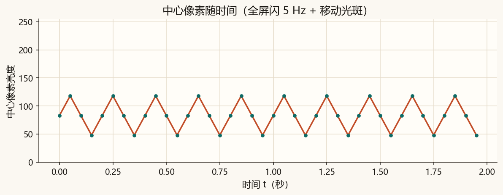
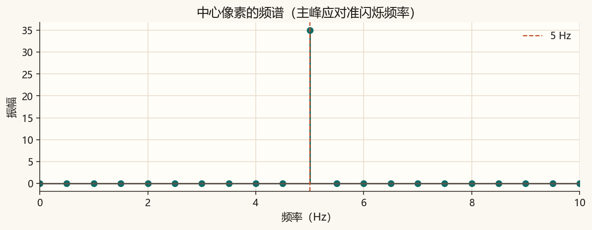
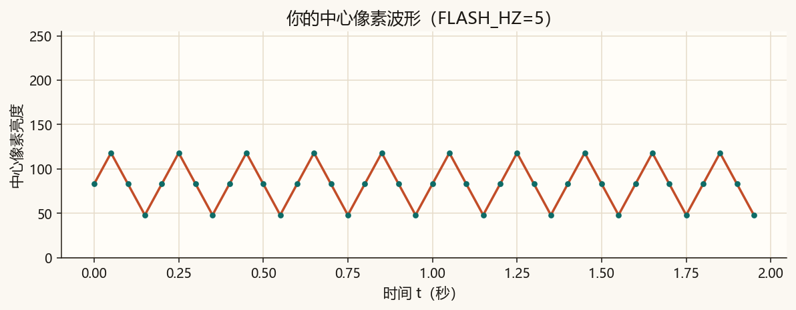
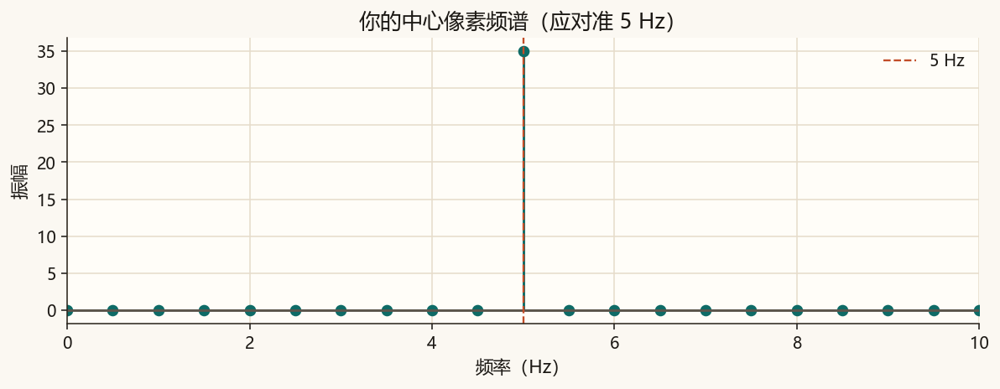

第 12 篇 · 视频与时间 · 约 40 分钟
一张照片是空间上的一张表。视频再叠一条时间：每秒摆多少张表，叫帧率。盯住画面正中那一个像素，它的亮度随时间起伏——又变回第 3 篇的一维信号，也能画频谱。
电影常见 24 帧/秒，电视常见 25 或 30，手机录像常常 30 或 60。帧率就是每秒保存多少张完整画面。它和声音的采样率是亲戚：声音每秒记多少个振幅，视频每秒记多少张图。
同一段 5 Hz 的亮度起伏，用每秒 10 帧去采，1 秒里只有 10 个点；用 20 帧，点密一倍。帧率太低，快闪会糊成别的样子——和第 1 篇「采样太稀」是同一类事。

整段视频可以看成三维数据：行 × 列 × 时间。若只取出固定一行、固定一列，沿着时间排开，就得到一条一维序列——和第 3 篇的波形没有本质差别。
y[n] = 第 n 帧、中心像素的亮度
对 y[n] 做一维 FFT，横轴就是「每秒闪多少次」。全屏以 5 Hz 闪，频谱就应在 5 Hz 附近冒峰。
脚本不依赖摄像头，自己画约 2 秒、20 帧/秒的灰阶动画：
每一帧存成 PNG，目录在 assets/figures/ch12_frames/。若本机装了 pillow，还会额外写一个 gif；没装也没关系，帧序列已经够用。

也可以直接打开帧文件，或（若已生成）看动画：
ch12_flash.gif（需要 pillow 才会生成；否则请翻帧目录里的 PNG）。把每帧中心亮度连起来，得到下面这条曲线。大起大落主要来自 5 Hz 全屏闪；光斑经过中心时会再叠一点鼓包。


拖动频率，看 1 秒里亮暗交替多少次。点越密表示帧率固定为 20。
完整脚本在 code/ch12_video.py。不强制安装 OpenCV；帧用 matplotlib / pillow 写 PNG。
python code/ch12_video.py终端应出现「自检通过」和主峰约 5 Hz。帧在 assets/figures/ch12_frames/；课文图包括 ch12_framerate.png、ch12_montage.png、ch12_waveform.png、ch12_spectrum.png。你的练习输出是 ch12_my_*.png 与 ch12_frames_mine/。
若终端中文是乱码，先执行 chcp 65001。可选：python -m pip install pillow 以生成 gif。
code/ch12_video.py，把 FLASH_HZ = 5.0 改成 2.0，运行。ch12_my_waveform.png：2 秒里起伏应更疏。再看 ch12_my_spectrum.png：主峰应靠近 2 Hz。8.0 再跑：波形更密，频谱峰靠近 8 Hz（仍低于帧率一半 10 Hz）。5.0。
FLASH_HZ = 5 时你的波形。
FLASH_HZ。每秒保存 20 张完整画面。声音采样率是每秒记多少个振幅；帧率是每秒记多少张图。都是「时间上采多密」。
固定行列、沿时间取值，得到一维序列 y[n]。对它做 FFT，横轴就是每秒变化多少次。全屏 5 Hz 闪，主峰应在 5 Hz 附近。
和奈奎斯特限制一样：能可靠分辨的最高频率约为帧率的一半。再高会混叠成别的频率。
频域不只用来「看」和「滤」，还特别适合压缩：许多系数接近 0，扔掉也几乎看不出。下一篇用 8×8 的 DCT 走通 JPEG 的核心一步，并点一下 MP3 与视频压缩的直觉。